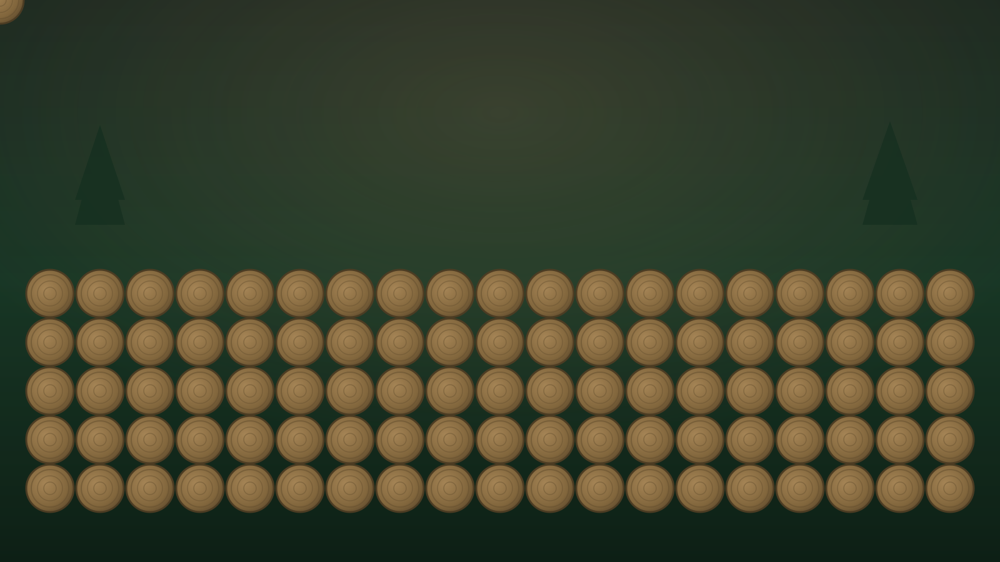

Grundstücksrodung & Baufeldfreimachung
Dicht bewachsenes Grundstück komplett gerodet und für den Baustart vorbereitet.
Ein Eindruck unserer Arbeit: von der Gefahrenfällung über die Grundstücksrodung bis zum fertigen Landschaftsbau-Projekt. Klicken Sie auf ein Bild für die Großansicht.
Beispielhafte Projekte, die den Unterschied zeigen. Aussagekräftige Vorher-Nachher-Bilder ergänzen wir laufend.
Dicht bewachsenes Grundstück komplett gerodet und für den Baustart vorbereitet.

Gefahrenbaum mittels Seilklettertechnik kontrolliert und schadensfrei entfernt.



Hinweis: Die hier gezeigten Motive sind illustrativ. Gerne ergänzen wir reale Projektfotos Ihrer Region.
Einzelbäume, Gefahrenbäume und ganze Bestände.
Grundstücksrodung und Baufeldfreimachung.
Pflasterung, Erdbau und Grünflächenpflege.
Holzeinschlag, Rückung und Aufforstung.
Erzählen Sie uns von Ihrem Vorhaben. Wir setzen es mit der gleichen Sorgfalt um wie alle Projekte zuvor.